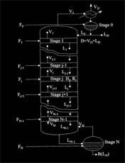

Introduction
Few would venture to assert the precise moment at which Scotch Whisky was first distilled. In fact, the origins of distilling itself are generally obscure, although it is commonly accepted as having first been attempted in India as long ago as 800BC.
This single operation is the most common method for chemical separation, the workhorse for chemical process industry. Distillation columns are ubiquitous; they are brightly lighted towers that rise from chemical plants and they are still used by moonshiners.
But the analysis of this process for a complex system becomes a more complex job. Here we challenge you with a modelling cum simulation problem regarding multicomponent distillation. The job is simple! Crack the problem! But the crux of the problem lies in its open ended behavior, thus we assure you only an asymptotic success towards the completion.
Problem Statement
Given the feed composition and feed conditions along with the operating and design parameters of the distillation column, get the steady state temperature and composition profiles along the column. Also get the plot of top and bottom stage temperatures and compositions versus time (dynamic behavior of the column) for a given initial condition. Following are the different types of models and the developed code is expected to be based on the suggested modeling strategies. Compare the results obtained with different models and also with the published results, if any.
Models
- Equilibrium stage model with constant molar overflows with ideal or nonideal liquid phase.
- Rigorous equilibrium stage model including energy balance and excluding stage efficiency factor. The model should be with and without constant molar holdup & energy holdup.
- Rigorous equilibrium stage model including energy balance and including stage efficiency factor.
- Non-Equilibrium stage model
- Conservation equations are written for each phase separately.
- The conservation equations for each phase are linked by material balance around the interface, i.e. inter-phase mass transfer rates are included in the balance equations.
- Similarly the energy balance for each stage is written by splitting into two parts one for each phase, each containing a term for the rate of energy transfer across the phase interface.
Assumptions and Requirements
-
The developed code should satisfy following conditions
- Multi component system (components greater than or equal to 3)
- Applicable to reactive and non-reactive distillation by changing suitable parameters.
- Capability of feed input at any stage including reboiler and condenser, with any feed condition.
- Condenser can be total as well as partial.
- Liquid phase non-ideality may be included using any appropriate thermodynamic model (e.g. Uniquac, NRTL, Wilson etc), with ideal vapour phase.
- Model may accommodate constant and non-constant molar liquid holdups and energy holdups, with negligible vapour holdups.
- Model should be formulated with and without stage efficiencies.
- Adiabatic column can be assumed (no heat loss to the surrounding).
- Reaction may be assumed to take place in liquid phase in case of reactive distillation.
- Pressure variation along the column may be accommodated.
Rules
- The code should be written in any well recognized computer programming language
- Simulation softwares are allowed
- A group of 3 students can participate
- The participants should mail the individual codes and the User interface software to purushottam@techfest.org
- The codes must be submitted before 23th January 2005.
Judging
Judging will be done on the following criteria:
- Correctness of the code
The values generated by the code should agree closely with the literature references. - Efficiency
The algorithmic simplicity and time efficiency of the code. - Extent of completion
Since this is an open problem, the challenge is to solve it to the farthest possible point. - Generalisation of the solution
Inclusion of as many parameters so as to ensure smooth adjustability of the code towards different situation. (Eg. Including multicomponent distillation and considering the two-component distillation as its special case) - Presentation
Top entries will be selected on the above basis, and will be asked to give a small presentation about their codes.
Weightages
| Correctness | 25% |
| Efficiency | 30% |
| Extent of completion | 20% |
| Generalisation of the problem | 15% |
| Presentation | 10% |
References
- Seader J.D. and Henlay E.J.. Separation Process principles. New York.
- Taylor R and Krishna R " Modeling of Homogeneous and heterogeneous Reactive distillation, Chapter-9, Reactive Distillation : Status and Future Directions, Book by Kai Sundmacher and Achim Kienle, New York :Wiley
- Taylor R and Krishna R (2000), Modeling Reactive Distillation, Review, Chemical Engineering science, (55) , 5183-5229. Download PDF
- Taylor R and Krishna R (1993), Multicomponent Mass Transfer, New York : Wiley.
- Chen, F., Robert S. Huss, F. Malone, Michael F. Doherty (2000), Simulation of kinetic effects in reactive distillation, comp & chem. Eng. 24, 2457-2472. Download PDF
Note
- Select any convenient system for the application of above mentioned modeling and simulation strategies.
- Use any programming language to implement the solution strategies of the model equations, like MATLAB, C, C++ etc. Standard FORTRAN packages can also be used like LSODE(ODE solver), RADAU5 (DAE solver) etc.
Faculty
Prof. Sanjay Mahajani
B.Chem. Engg. University of Bombay, 1989.
M. Tech. Indian Institute of Technology, Bombay, 1992
Ph.D., University of Bombay, 1996
In case of queries, contact:
Purushottam Dixit
Manager, Chemsplash
Techfest 2005
Email: purushottam@techfest.org
Ph No. +91-98205 89110